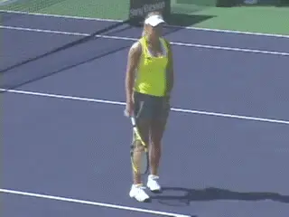
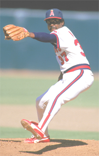
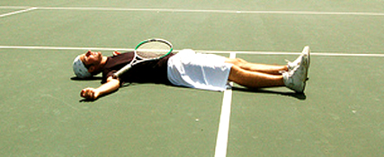
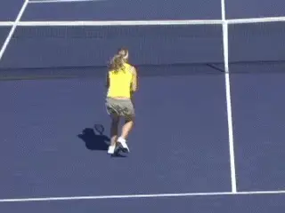

The Problem of Finishing¶
By Allen Fox, Ph.D.¶

\"Perfectionism\" allows players to keep getting angry over mistakes.
Let's take a closer look at the concept of \"perfectionism,\" which I see as substantially different from the common understanding.
When people label themselves as \"perfectionists\" they usually do so with a hint of pride. There seems to be something quite admirable about being the type of person who will settle for nothing less than perfection.
The reality is quite different. The \"perfectionists\" that I run into - the ones that are forever getting angry or depressed when they make mistakes on the tennis court - simply suffer from an immature and distorted view of reality.
Of course, they make mistakes, and of course they don't like making mistakes. Nobody does. But they have not yet accepted the truth that they make mistakes because it is impossible not to make them, and it always will be. That's the reality of the situation, and it's a reality they are not yet able to accept.
Calling the trait \"perfectionism\" turns it into more of a virtue than it is and allows them to continue getting angry at mistakes they can't help. If they saw the issue as one of being simply immature and unrealistic (which are faults, not virtues) they might have to take action to correct it, which they are not yet prepared to do.
One of my later teams when I was coaching at Pepperdine included a young player from France named Charles Auffray. He had been a walk-on as a freshman and had a great deal of physical talent. But he was emotionally undisciplined and a \"perfectionist\" in the sense of the previous paragraph.

No matter what you do, you cannot eliminate mistakes.
He was a brilliant young man. His father had gotten a Ph.D. from Berkeley in philosophy (I believe), was a very successful businessman in Paris, and his mother was classy and bright too. Charles had inherited all this and was scary smart.
He could hardly speak English when he arrived (at least I could barely understand him), but he had somehow managed to pass the language and entrance exams. He never slept; he never studied; and he got A's in most of his classes. I was mystified as to how he did it.
But on the tennis court he had a very short fuse. Despite his extraordinary physical abilities, he was prone to become wildly agitated if he was playing worse than he thought he should. I could never seem to convince him that he was human, not a machine, and that his game was subject to variability.
I remember him coming off the court after what he considered a terrible performance and muttering things like, \"I could not hit ball in ze court!\" \"I cannot play zis game!\" \"I only miss, miss, miss!\" \"I must quit and play ozer game!\" Sputtering around with his broken English and funny accent, it was hard to take him seriously.
Some players get dark and ugly when they lose, and there is nothing funny about being around them. Charles, on the other hand, was a lovely guy and a good soul. Everyone liked him, and his frustrated grousing was vaguely comical.

I loved everything about the tour\--except losing.
I couldn't resist. So I said to him, \"Charles, I have the solution to your problem of making too many mistakes. It's simple. The next time you play a match, go out there and don't miss anymore!\"
For a moment he just stared at me quizzically, thinking I was crazy. Then he understood. I said, \"That's right, Charles. You can't possibly do that. You make mistakes because you can't help it! Accept the fact that no matter what you do, you will always make mistakes. And the sooner you stop getting upset about something that you can't help, the better off you will be.\"
I don't know if it was this little talk or whether Charles simply figured it out for himself, but he got better control of himself and ended up as the #1 player on the Pepperdine team and one of the best college players in the country. The last I heard, he was running a tennis academy in France.
Taking Loses Hard
When I played on the tour I loved almost every aspect of the game. Tournaments were exciting because each held the initial promise of victory, and practicing was a joy because I saw it as a pathway to winning. Besides that, I just liked hitting the ball, competing, and the camaraderie of the players.
But there was only one terribly unpleasant feature of the game - losing! After a loss, especially if it was a close match and I had blown chances to win, I was in agony. I didn't want to talk to anybody and usually hid out alone in my room - brooding.

**A career saves leader, but burdened for life by blowing two leads.**
There I relived every crucial error in excruciating detail. The misery lasted for hours, sometimes days. Even now, though I play only for exercise and enjoyment, I still hate losing.
Of course, driven tennis players are not the only athletes that torment themselves after losses. Relief pitchers in baseball that have the responsibility for closing out important games in the late innings are known to be hard on themselves if they blow leads.
In 2007 Trevor Hoffman, then playing for the San Diego Padres and baseball's career saves leader, blew two saves in three days, the last in a play-off against the Colorado Rockies with a two-run lead in the 13th inning that cost his team a playoff berth. Reflecting on the loss years afterward, Hoffman said, \"I'm not going to sugarcoat it. It was devastating. It's not just a burden I lived with all winter. It's a burden I'll live with for the rest of my life.\" Wow! Rather excessive, but not the most excessive such story in baseball history.
Donnie Moore's story, if true, is even worse. He was pitching for the California Angels in 1986, and his team was one game away from the World Series when he allowed Dave Henderson of the Boston Red Sox to hit a home run and tie the game. The Angels lost the game in extra innings, and lost the series two games later.
According to some friends and family Moore never got over the loss, and in 1989, depressed, he committed suicide. Of course, nobody can be certain of all the factors that drive a person to do such a thing, and I would doubt that the loss alone was the cause. However, I have little doubt that brooding over the loss made Moore's depression worse and was, overall, extremely unhelpful.
Fortunately, my own self-flagellation after losing was not this bad, but it was bad enough. Was it helpful? Yes, in some ways. It highlighted weaknesses in my game so I always knew what I needed to work on.

For Donnie Moore brooding over a devastating loss may have, tragically, contributed to his suicide.
The pain motivated me to practice harder and longer. It also kept me going in long, hot, difficult matches, because I knew the misery that awaited me if I gave up.
At the same time, however, it was quite destructive in other ways. It increased the pressure to win, and this made me more likely to choke. It amped up the overall stress, and added, at times, great pain to what should have been a fun game.
With 20-20 hindsight, I see that my reactions were counter-productive on balance. The costs far outweighed the benefits. In any case, I didn't do it to help myself. My self-flagellation was simply a punishment for having disappointed myself. I subconsciously felt I had a good butt-kicking coming, and I was determined to administer it. This was extremely unhelpful in the greater scheme of enjoying the game and winning matches.
Brooding over losses hurts your confidence. The best way to handle a loss is to get over it quickly. All losses hurt your confidence as a matter of course, but you want to reduce this to a minimum.
The more time you spend thinking about a loss, the more emotion you associate with it, and the more you highlight it in your mind, the more it will damage your confidence. You must make a conscious effort to push the loss out of your mind as soon as you can by replacing it with thoughts that are pleasant and productive, like those about your past wins.
This is often difficult because tennis matches are combative and personal in their nature and more subject to strong emotion than most other sports. They feel more important than they are. Losses tend to mentally linger, so it sometimes requires conscious determination to put them behind you.

Losses feel more important than they are.
It helps to remind yourself that when you make errors and lose matches you do so because, as I explained to Charles Auffray, you can't help it. Your errors are reactions to the immediate situation on court and are reflexive, not products of thought.
They involve malfunctioning habits that go awry because of uncontrollable human variability, which is simply part of the human condition. So there is little benefit in mentally replaying and brooding over them - in worrying about what is impossible to control or change. The best response is to quickly accept reality and move on. Make an affirmative effort to keep the object of the game in mind.
After reading this article I hope you agree with the logic. But I have often found that many people who do agree with it while sitting in a quiet room still get overly stressed on the court.

Errors are reflexive reactions, not products of thought.
Why? It's because they don't then make a strong mental effort to use this logic. Understanding and agreement do no good at all unless they result in players changing. And this takes a positive effort. (Otherwise, nature will take its course and you will continue to become stressed.)
In summary, the best way for a tennis player (or any athlete) to handle stress, losses, or setbacks is to consciously adopt a healthy and realistic perspective.
And this is that tennis is just a game you started out playing for enjoyment, and regardless of your level, it should continue to be fun.
Many aspects of the game are impossible to control so failures in these areas must be unemotionally accepted so you can move on. Worrying about losing and mentally punishing yourself for failures that can't be controlled simply make the game overly emotional, hurt your confidence, and take the fun out of playing.
This article is excerpted from Allen's new book, Tennis: Winning the Mental Match, which will be available at the end of 2010 on Amazon and on Allen's new website, www.allenfoxtennis.net.
Read More From Allen!
Visit him at www.allenfoxtennis.net
|  | Tennis is mentally the most difficult sport due to it's personal nature which makes winning and losing feel more |
| important than they are. In this new book, Allen offers his proven solutions to problems such as choking, reducing | |
| stress, finishing matches, and developing confidence. Based on a life time of high level play and coaching success, | |
| it's a must for all competitive players. | |
| [ to | |
| Order](http://www.amazon.com/Tennis-Winning-Mental-Allen-Fox/dp/0615407765/ref=sr_1_1?ie=UTF8&qid=1336083459&sr=8-1). |
|  | eminently preferable to losing. In his new book, The |
| Winner's Mind, Allen lays out an original step-by-step | |
| plan for succeeding at any of life's endeavors, based on | |
| his first hand and very personal observations of the | |
| careers of both world-class tennis players and successful | |
| businessman. The bottom line is that even if you are not a | |
| born champion--and only a tiny percentage of us are--you | |
| can still use the success strategies of champions to tilt | |
| the odds in your favor. Writing with brutal honesty and dry | |
| humor, Fox lays out the common mental characteristics of | |
| winners in sports and in life. He explains the critical | |
| role of intellect over emotion. He analyzes the struggle | |
| between ambition and fear and the insidious and pervasive | |
| fear of failure that undermines so many of us. He then | |
| outline how to confront and overcome these fears in your | |
| life and career, even when they are initially subconscious. | |
| Must reading from one of the great thinkers in tennis, and | |
| a Renaissance Man in life. [ to | |
| Order](http://www.tennis-warehouse.com/descpage-MIND.html). | |
| To purchase this book you can also send a check for \$17.95 | |
| to Allen Fox, 1120 Inverness Place, San Luis Obispo, CA. | |
| 93401. The price includes shipping. |
|  | insightful analysts in modern tennis. A top 10 |
| American player from the glory days before Open | |
| tennis, Fox played many of the legendary greats, among | |
| them Roy Emerson, Rod Laver, Stan Smith, and Arthur | |
| Ashe. At Pepperdine he developed the men's tennis | |
| program into an elite contender for national titles, | |
| and gave Brad Gilbert the insights that became the | |
| foundation for \"Winning Ugly\". His book Think to Win | |
| is a modern classic. He has also starred in a series | |
| of acclaimed videos, including Pro Secrets of Match | |
| Play and Allen Fox's Ultimate Tennis Lesson. | |